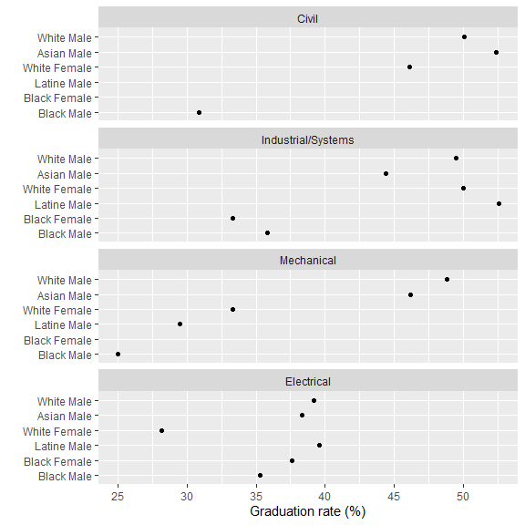

Graduation rate is a widely used, though flawed, measure of academic performance. The American Council on Education estimates that the conventional definition of graduation rate may exclude up to 60% of students at 4-year institutions (Cook & Hartle, 2011). Nevertheless, as Cook and Hartle explain,
… in the eyes of the public, policy makers, and the media, graduation rate is a clear, simple, and logical—if often misleading—number.
Recognizing that graduation rate is a popular metric, we illustrate an improved longitudinal graduation rate calculation that includes many (though not all) of the students excluded by the conventional definition.
A more inclusive definition
In general, graduation rate is the fraction of starters completing their program in a timely manner.
- IPEDS graduation rate
-
In the US, the Integrated Postsecondary Education Data System (IPEDS) defines “graduation rate” as the fraction of a cohort of full-time, first-time, degree-seeking undergraduates who complete their program within a percentage (100%, 150%, or 200%) of the “normal” time (typically 4 years) as defined by the institution (NCES-IPEDS, 2020). IPEDS excludes students who attend college part-time, who transfer between institutions, and who start college in Winter or Spring terms.
- MIDFIELD graduation rate
-
The MIDFIELD definition of graduation rate includes starters who are part-time, transfers, or admitted in any term.
The table summarizes the comparison between the two definitions of graduation rate.
| Constraints | IPEDS | MIDFIELD | MIDFIELD notes |
|---|---|---|---|
| completion span: | 4, 6, or 8 years | 4, 6, or 8 years | Typical usage is 6 years |
| students admitted in: | Summer/Fall only | any term | |
| part-time students are: | excluded | included | Timely completion same as full-time students |
| transfer students are: | excluded | included | Timely completion span adjusted for level at entry |
| switchers: | see below | see below | A heuristic could be developed for extending the completion span |
Switchers. Students who change majors (switchers) are problematic in determining graduation rate. Switchers are generally included in the count of starters of their first program. After switching, should they graduate in a timely manner, whether they are included in the count of graduates of their new program depends on the CIP level for which graduation rate is calculated. We have four possible cases:
Graduation rate computed at the institution level includes all switchers within the institution. For example, switchers from Engineering (CIP 14) who graduate in Business (CIP 52) are included in the count of institution starters and graduates. IPEDS defines this rate as the institution completion rate.
Computing at the 2-digit CIP level includes switcher graduates within the same 2-digit CIP and excludes others. For example, switchers from Electrical Engineering (CIP 1410) who graduate in Mechanical Engineering (CIP 1419) are included in the count of Engineering starters and graduates (CIP 14). Switchers from Engineering who graduate in Business are excluded from the Business graduate count.
Computing at the 4-digit CIP level is similar. For example, switchers from Laser and Optical Engineering (CIP 141003) who graduate in Telecommunications Engineering (CIP 141004) are included in the count of Electrical Engineering starters and graduates (CIP 1410). Switchers from Electrical Engineering who graduate in Mechanical Engineering are excluded from the Mechanical Engineering graduate count.
Computing at the 6-digit CIP level excludes all switcher graduates, though this case is rarely used.
No extensions for switchers. Because a switcher may have to complete remedial work in their new program, their time to graduation may exceed the defined acceptable span (typically 6 years). The graduation rate definition has no mechanism for extending the completion span even if both the student and faculty of the new program consider the student’s graduation timely.
The IPEDS definition of graduation rate excludes such an extension. MIDFIELD currently has no mechanism to extend the completion span for switchers, though a more inclusive heuristic could be developed.
Data
If you are writing your own script to follow along, we start with these packages:
# Packages
library("midfieldr")
library("midfielddata")
suppressMessages(library("data.table"))
suppressPackageStartupMessages(library("ggplot2"))
# Printing options for data.table
options(
datatable.print.nrows = 15,
datatable.print.topn = 5,
datatable.print.class = TRUE
)The data set study_starters (included with midfieldr)
contains the IDs of students starting in four programs (Civil,
Electrical, Industrial/Systems, and Mechanical Engineering) after
filtering for data sufficiency, degree seeking, and program. Starters
include FYE proxies. (Deriving these data from the source data tables is
described in Starters and FYE
programs).
# Case study starters
study_starters#> mcid start program
#> <char> <char> <char>
#> 1: MID25783441 140801 CE
#> 2: MID25783491 141001 EE
#> 3: MID25783912 143501 ISE
#> 4: MID25784025 141901 ME
#> 5: MID25784209 140801 CE
#> ---
#> 4889: MID26696642 141001 EE
#> 4890: MID26696738 141901 ME
#> 4891: MID26696958 141901 ME
#> 4892: MID26696967 141901 ME
#> 4893: MID26697444 141901 METhe data set study_observations (included with
midfieldr) contains the graduates of the case study programs as well as
those ever enrolled, which we ignore for this metric. (Deriving these
data from the source data tables is described in Case study: Data)
# Case study graduates
study_observations#> mcid race sex program group
#> <char> <char> <char> <char> <char>
#> 1: MID25783178 Black Male ISE ever
#> 2: MID25783441 White Male CE ever
#> 3: MID25783491 White Male EE ever
#> 4: MID25783912 White Male ISE ever
#> 5: MID25784025 Black Male ME ever
#> ---
#> 11208: MID26696738 White Male ME grad
#> 11209: MID26696771 White Female EE grad
#> 11210: MID26696967 White Male ME grad
#> 11211: MID26697163 Hispanic/Latinx Male ME grad
#> 11212: MID26697447 Asian Male EE gradImporting. We use the midfielddata
student table for its race and
sex variables, keyed by student ID.
# Load data from midfielddata
data(student)
# Display selected columns
student[, .(mcid, race, sex)]#> mcid race sex
#> <char> <char> <char>
#> 1: MID25783135 White Male
#> 2: MID25783147 White Female
#> 3: MID25783156 White Female
#> 4: MID25783162 White Male
#> 5: MID25783166 White Male
#> ---
#> 97636: MID26697680 Other/Unknown Female
#> 97637: MID26697682 White Male
#> 97638: MID26697685 White Male
#> 97639: MID26697689 Native American Male
#> 97640: MID26697702 White MaleGather starters
# Create a working data frame
DT <- study_starters[, .(mcid, program)]
# Label the group
DT[, group := "start"]
# Display the result
DT[]#> mcid program group
#> <char> <char> <char>
#> 1: MID25783441 CE start
#> 2: MID25783491 EE start
#> 3: MID25783912 ISE start
#> 4: MID25784025 ME start
#> 5: MID25784209 CE start
#> ---
#> 4889: MID26696642 EE start
#> 4890: MID26696738 ME start
#> 4891: MID26696958 ME start
#> 4892: MID26696967 ME start
#> 4893: MID26697444 ME startGather graduates
Graduates are a subset of study_observations. Rename the
program variable to prepare for a merge operation.
grad <- study_observations[group == "grad"]
grad[]#> mcid race sex program group
#> <char> <char> <char> <char> <char>
#> 1: MID25783178 Black Male ISE grad
#> 2: MID25783441 White Male CE grad
#> 3: MID25783491 White Male EE grad
#> 4: MID25783912 White Male ISE grad
#> 5: MID25784489 Asian Female CE grad
#> ---
#> 3548: MID26696738 White Male ME grad
#> 3549: MID26696771 White Female EE grad
#> 3550: MID26696967 White Male ME grad
#> 3551: MID26697163 Hispanic/Latinx Male ME grad
#> 3552: MID26697447 Asian Male EE gradPrep for joining.
grad <- grad[, .(mcid, program_grad = program)]
grad[]#> mcid program_grad
#> <char> <char>
#> 1: MID25783178 ISE
#> 2: MID25783441 CE
#> 3: MID25783491 EE
#> 4: MID25783912 ISE
#> 5: MID25784489 CE
#> ---
#> 3548: MID26696738 ME
#> 3549: MID26696771 EE
#> 3550: MID26696967 ME
#> 3551: MID26697163 ME
#> 3552: MID26697447 EE
start <- DT[, .(mcid, program_start = program)]
start[]#> mcid program_start
#> <char> <char>
#> 1: MID25783441 CE
#> 2: MID25783491 EE
#> 3: MID25783912 ISE
#> 4: MID25784025 ME
#> 5: MID25784209 CE
#> ---
#> 4889: MID26696642 EE
#> 4890: MID26696738 ME
#> 4891: MID26696958 ME
#> 4892: MID26696967 ME
#> 4893: MID26697444 MELeft outer join to filter for students with matching start and grad CIPs.
grad <- start[grad, on = c("mcid")]
grad[]#> mcid program_start program_grad
#> <char> <char> <char>
#> 1: MID25783178 <NA> ISE
#> 2: MID25783441 CE CE
#> 3: MID25783491 EE EE
#> 4: MID25783912 ISE ISE
#> 5: MID25784489 <NA> CE
#> ---
#> 3548: MID26696738 ME ME
#> 3549: MID26696771 <NA> EE
#> 3550: MID26696967 ME ME
#> 3551: MID26697163 <NA> ME
#> 3552: MID26697447 <NA> EE
grad <- grad[program_start == program_grad]
grad[]#> mcid program_start program_grad
#> <char> <char> <char>
#> 1: MID25783441 CE CE
#> 2: MID25783491 EE EE
#> 3: MID25783912 ISE ISE
#> 4: MID25784709 CE CE
#> 5: MID25784843 CE CE
#> ---
#> 2072: MID26696337 CE CE
#> 2073: MID26696429 ISE ISE
#> 2074: MID26696642 EE EE
#> 2075: MID26696738 ME ME
#> 2076: MID26696967 ME MERecode to prepare for joining row-wise.
grad <- grad[, .(mcid, program = program_start, group = "grad")]
grad[]#> mcid program group
#> <char> <char> <char>
#> 1: MID25783441 CE grad
#> 2: MID25783491 EE grad
#> 3: MID25783912 ISE grad
#> 4: MID25784709 CE grad
#> 5: MID25784843 CE grad
#> ---
#> 2072: MID26696337 CE grad
#> 2073: MID26696429 ISE grad
#> 2074: MID26696642 EE grad
#> 2075: MID26696738 ME grad
#> 2076: MID26696967 ME gradCombine starters and graduates
Binding. Combine two data frames by matching column names.
#> mcid program group
#> <char> <char> <char>
#> 1: MID25783441 CE start
#> 2: MID25783491 EE start
#> 3: MID25783912 ISE start
#> 4: MID25784025 ME start
#> 5: MID25784209 CE start
#> ---
#> 6965: MID26696337 CE grad
#> 6966: MID26696429 ISE grad
#> 6967: MID26696642 EE grad
#> 6968: MID26696738 ME grad
#> 6969: MID26696967 ME gradAdd demographics
Creating variables. Using columns from student, we add variables for race/ethnicity and sex using a left-outer join.
DT <- student[DT, .(mcid, program, group, race, sex), on = c("mcid")]
DT[]#> mcid program group race sex
#> <char> <char> <char> <char> <char>
#> 1: MID25783441 CE start White Male
#> 2: MID25783491 EE start White Male
#> 3: MID25783912 ISE start White Male
#> 4: MID25784025 ME start Black Male
#> 5: MID25784209 CE start International Male
#> ---
#> 6965: MID26696337 CE grad Hispanic/Latinx Male
#> 6966: MID26696429 ISE grad White Female
#> 6967: MID26696642 EE grad White Male
#> 6968: MID26696738 ME grad White Male
#> 6969: MID26696967 ME grad White MaleGroup and summarize
DT <- DT[, .N, by = c("group", "program", "race", "sex")]
DT[]#> group program race sex N
#> <char> <char> <char> <char> <int>
#> 1: start CE White Male 665
#> 2: start EE White Male 879
#> 3: start ISE White Male 198
#> 4: start ME Black Male 132
#> 5: start CE International Male 13
#> ---
#> 96: grad ISE International Male 10
#> 97: grad ISE Asian Female 3
#> 98: grad ISE International Female 3
#> 99: grad ME Native American Female 1
#> 100: grad EE International Female 1Compute metric
Transform.
# Transform to row-record form
DT <- dcast(DT, program + sex + race ~ group, value.var = "N", fill = 0)
DT[]#> program sex race grad start
#> <char> <char> <char> <int> <int>
#> 1: CE Female Asian 5 11
#> 2: CE Female Black 8 34
#> 3: CE Female Hispanic/Latinx 3 7
#> 4: CE Female Other/Unknown 1 5
#> 5: CE Female White 94 204
#> ---
#> 49: ME Male Hispanic/Latinx 13 44
#> 50: ME Male International 13 25
#> 51: ME Male Native American 1 7
#> 52: ME Male Other/Unknown 10 22
#> 53: ME Male White 583 1195
DT[, rate := round(100 * grad / start, 1)]
DT[]#> program sex race grad start rate
#> <char> <char> <char> <int> <int> <num>
#> 1: CE Female Asian 5 11 45.5
#> 2: CE Female Black 8 34 23.5
#> 3: CE Female Hispanic/Latinx 3 7 42.9
#> 4: CE Female Other/Unknown 1 5 20.0
#> 5: CE Female White 94 204 46.1
#> ---
#> 49: ME Male Hispanic/Latinx 13 44 29.5
#> 50: ME Male International 13 25 52.0
#> 51: ME Male Native American 1 7 14.3
#> 52: ME Male Other/Unknown 10 22 45.5
#> 53: ME Male White 583 1195 48.8Prepare for dissemination
We take several additional steps to prepare the data for dissemination in tables or charts.
# Preserve anonymity
DT <- DT[grad >= 10]
DT[]#> program sex race grad start rate
#> <char> <char> <char> <int> <int> <num>
#> 1: CE Female White 94 204 46.1
#> 2: CE Male Asian 11 21 52.4
#> 3: CE Male Black 17 55 30.9
#> 4: CE Male White 333 665 50.1
#> 5: EE Female Black 41 109 37.6
#> ---
#> 21: ME Male Black 33 132 25.0
#> 22: ME Male Hispanic/Latinx 13 44 29.5
#> 23: ME Male International 13 25 52.0
#> 24: ME Male Other/Unknown 10 22 45.5
#> 25: ME Male White 583 1195 48.8
# Filter by study design
DT <- DT[!race %chin% c("International", "Other/Unknown")]
DT <- DT[race == "Hispanic/Latinx", race := "Latine"]
DT[]#> program sex race grad start rate
#> <char> <char> <char> <int> <int> <num>
#> 1: CE Female White 94 204 46.1
#> 2: CE Male Asian 11 21 52.4
#> 3: CE Male Black 17 55 30.9
#> 4: CE Male White 333 665 50.1
#> 5: EE Female Black 41 109 37.6
#> ---
#> 17: ME Female White 59 177 33.3
#> 18: ME Male Asian 36 78 46.2
#> 19: ME Male Black 33 132 25.0
#> 20: ME Male Latine 13 44 29.5
#> 21: ME Male White 583 1195 48.8
DT[, people := paste(race, sex)]
DT[, c("race", "sex") := NULL]
setcolorder(DT, c("program", "people"))
DT[]#> program people grad start rate
#> <char> <char> <int> <int> <num>
#> 1: CE White Female 94 204 46.1
#> 2: CE Asian Male 11 21 52.4
#> 3: CE Black Male 17 55 30.9
#> 4: CE White Male 333 665 50.1
#> 5: EE Black Female 41 109 37.6
#> ---
#> 17: ME White Female 59 177 33.3
#> 18: ME Asian Male 36 78 46.2
#> 19: ME Black Male 33 132 25.0
#> 20: ME Latine Male 13 44 29.5
#> 21: ME White Male 583 1195 48.8
DT[, program := fcase(
program %like% "CE", "Civil",
program %like% "EE", "Electrical",
program %like% "ME", "Mechanical",
program %like% "ISE", "Industrial/Systems"
)]
DT[]#> program people grad start rate
#> <char> <char> <int> <int> <num>
#> 1: Civil White Female 94 204 46.1
#> 2: Civil Asian Male 11 21 52.4
#> 3: Civil Black Male 17 55 30.9
#> 4: Civil White Male 333 665 50.1
#> 5: Electrical Black Female 41 109 37.6
#> ---
#> 17: Mechanical White Female 59 177 33.3
#> 18: Mechanical Asian Male 36 78 46.2
#> 19: Mechanical Black Male 33 132 25.0
#> 20: Mechanical Latine Male 13 44 29.5
#> 21: Mechanical White Male 583 1195 48.8
# Convert categorical variables to factors
DT <- order_multiway(DT,
quantity = "rate",
categories = c("program", "people"),
method = "percent",
ratio_of = c("grad", "start")
)
DT[]#> program people grad start rate program_rate people_rate
#> <fctr> <fctr> <num> <num> <num> <num> <num>
#> 1: Civil White Female 94 204 46.1 48.1 39.4
#> 2: Civil Asian Male 11 21 52.4 48.1 42.5
#> 3: Civil Black Male 17 55 30.9 48.1 31.8
#> 4: Civil White Male 333 665 50.1 48.1 46.3
#> 5: Electrical Black Female 41 109 37.6 37.6 36.4
#> ---
#> 17: Mechanical White Female 59 177 33.3 44.5 39.4
#> 18: Mechanical Asian Male 36 78 46.2 44.5 42.5
#> 19: Mechanical Black Male 33 132 25.0 44.5 31.8
#> 20: Mechanical Latine Male 13 44 29.5 44.5 37.8
#> 21: Mechanical White Male 583 1195 48.8 44.5 46.3Chart
ggplot(DT, aes(x = rate, y = people)) +
facet_wrap(vars(program), ncol = 1, as.table = FALSE) +
geom_point() +
labs(x = "Graduation rate (%)", y = "") 
Reminder. These are practice data, not research data—suitable for learning about student-record analysis, but not for drawing inferences about program attributes or student experiences.
Appendix
Complete script
The vignette code chunks are collected below in a single, condensed script.